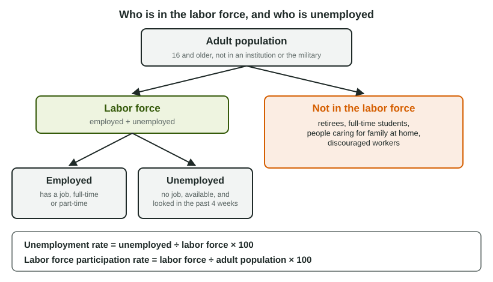

Unemployment
The labor force is the employed plus the unemployed; the unemployment rate divides the unemployed by the labor force, and the participation rate divides the labor force by the adult population.
Part 1 · Hook
Why this matters
Part 2 · Before you start
What this builds on
Part 3 · Prerequisite check
Quick check before you start
1. An economy produces at a point inside its production possibilities curve. What does that show?
- Some resources are unused or used inefficiently
- The economy is producing more than it can
- The economy has grown
- The economy is using every resource fully
Show the answer
A point inside the PPC means the economy could produce more of both goods: some resources, such as workers, are idle.
- Correct: Some resources are unused or used inefficiently:
- The economy is producing more than it can:
- The economy has grown:
- The economy is using every resource fully:
2. Labor is which of these?
- A factor of production
- A final good
- A transfer payment
- An intermediate good
Show the answer
Land, labor, capital and entrepreneurship are the factors of production that households sell in the factor market.
- Correct: A factor of production:
- A final good:
- A transfer payment:
- An intermediate good:
Part 4 · See it
See it first

Part 5 · Step by step
How it works, step by step
- A person has no job, is available, and looked for work in the past four weeksthey are counted as unemployed and are in the labor force
- A jobless person stops looking because they think no jobs existthey become a discouraged worker, outside the labor force, so the measured rate understates joblessness
- Spending and output fall in a recessionfirms lay off workers and cyclical unemployment rises above zero
- Cyclical unemployment returns to zerothe actual rate equals the natural rate (frictional + structural): full employment
Part 6 · Key ideas
Key ideas
- Labor force = employed + unemployed. Unemployment rate ; participation rate .
- Frictional: searching between jobs. Structural: skills or location do not match the jobs. Cyclical: caused by a downturn in spending.
- Natural rate = frictional + structural; actual = natural + cyclical. Full employment does not mean zero unemployment.
- Retirees and discouraged workers are outside the labor force; part-time workers who want full-time jobs count as employed.
Part 7 · Misconception
A common mistake
The wrong idea: Anyone without a job is unemployed, and full employment means 0% unemployment.
What actually happens: Only jobless people who are looking count as unemployed; retirees and discouraged workers are outside the labor force. At full employment frictional and structural unemployment remain: the actual rate equals the natural rate.
Part 8 · Check yourself
Check yourself
Exam-style questions. Anything you miss goes into your review queue.
Data
Labor market survey in Country X
| Group | Millions |
|---|---|
| Adult population (16 and older, not in an institution or the military) | 250 |
| Employed (full-time or part-time) | 150 |
| Unemployed (no job, available, looked in the past 4 weeks) | 10 |
| Not in the labor force | 90 |
| of whom: discouraged workers | 2 |
1. What is the labor force in Country X, in millions of people?
Type a number. A four-function calculator is allowed, as on the exam.
Show the answer
The labor force is the employed plus the unemployed: million. People not in the labor force are not part of it.
- Answer: 160
2. What is the unemployment rate in Country X?
Type a number (%). A four-function calculator is allowed, as on the exam.
Show the answer
Unemployment rate
- Answer: 6.25 %
3. What is the labor force participation rate in Country X?
Type a number (%). A four-function calculator is allowed, as on the exam.
Show the answer
Participation rate
- Answer: 64 %
Scenario
Five people in Country Y
Ana quit her job as a nurse to move closer to her family and is applying for nursing jobs in her new city. Ben ran a printing press for 20 years; the plant replaced its presses with digital machines, and the jobs open near him need computer skills he does not have. Chen was laid off from a car dealership when sales fell during a recession; he is looking for work. Dee retired at 67 and is not looking for work. Eli lost his job a year ago and has stopped looking because he believes no one is hiring.
4. What type of unemployment does Ben experience?
- He is not in the labor force
- Structural
- Frictional
- Cyclical
Show the answer
Structural unemployment is a mismatch between workers' skills or locations and the jobs on offer, often after technology or the pattern of demand changes.
- He is not in the labor force: He is out of work and looking, so he is unemployed and in the labor force.
- Correct: Structural: Right: his skills no longer match the jobs available, because technology changed the industry.
- Frictional: Frictional unemployment is time spent searching between jobs a worker is qualified for; Ben lacks the skills the open jobs need.
- Cyclical: Cyclical unemployment comes from a fall in spending in a downturn; Ben's job vanished because the technology changed.
5. What type of unemployment does Chen experience?
- Frictional
- Seasonal
- Cyclical
- Structural
Show the answer
Cyclical unemployment rises when the economy's total spending and output fall and firms lay off workers.
- Frictional: He did not leave to search for a better match; he was laid off when demand fell.
- Seasonal: Nothing suggests a regular yearly pattern; the cause is the recession.
- Correct: Cyclical: Right: he lost his job because spending fell during a recession.
- Structural: His skills still fit car sales; the jobs disappeared because sales fell, not because his skills became outdated.
Data
Unemployment rates in Country Z over three years
| Year | Actual unemployment rate | Frictional unemployment rate | Structural unemployment rate |
|---|---|---|---|
| 1 | 5.0 | 2.0 | 3.0 |
| 2 | 8.0 | 2.0 | 3.0 |
| 3 | 4.5 | 2.0 | 3.0 |
6. What is Country Z's natural rate of unemployment?
Type a number (%). A four-function calculator is allowed, as on the exam.
Show the answer
Natural rate = frictional + structural . It is the same in every year of the table.
- Answer: 5 %
7. What is the cyclical unemployment rate in Year 2?
Type a number (%). A four-function calculator is allowed, as on the exam.
Show the answer
Cyclical = actual - natural . Actual = natural + cyclical.
- Answer: 3 %
8. Country W has high cyclical unemployment: many willing workers cannot find jobs. Mark a point on its production possibilities curve graph that shows where it is producing.
Work on the graph (it needs JavaScript), then check.
Show the answer
Unemployed workers are resources left idle, so the economy produces inside its PPC: less of both goods than it could.
- Key: see the explanation
Part 9 · Summary
Summary
Part 10 · Up next
What comes next
Part 11 · Connections